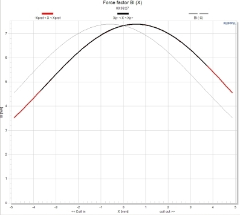

| Identifier | Bl=, Bl1=, Bl2= |
| Units | Tm |
| Format | Floating-point number |
| Purpose | Force-factor of electro-dynamic motor |
| Used in | Def_Driver,
Def_TwoCoilsDriver,
Def_Speaker, Gyrator |
| See also | Electro-dynamic-model |
BL is the force-factor of the motor as explained in chapter Electro-Dynamic-Model.
BL1= and BL2= are used for an electro-dynamic driver with two voice coils, see Def_TwoCoilsDriver.
Example of a driver with one voice-coil
Def_Driver 'SP38'
Re=5.82ohm Le=2.9mH fre=1.1kHz ExpoRe=0.824 ExpoLe=0.756
BL=21Tm
Mms=70g Cms=81e-6m/N Rms=1Ns/m
Example of a driver with two voice-coils
Def_TwoCoilsDriver 'SP382'
Re1=5.82ohm Le1=2.9mH fre1=1.1kHz ExpoRe1=0.824 ExpoLe1=0.756
BL1=21Tm
Re2=5.82ohm Le2=2.9mH fre2=1.1kHz ExpoRe2=0.824 ExpoLe2=0.756
BL2=21Tm
Mms=70g Cms=81e-6m/N Rms=1Ns/m

BL is assumed to be a constant. However, in reality BL depends on the excursion of the voice-coil, ie BL(x). Because the excursion is related to the velocity, which is one of the Network Parameters, a non-constant BL will cause distortion.
The plot demonstrates BL(x). For this transducer only for very small excursions we can assume a constant value for BL. For large amplitudes the value of BL travels along the black curve. The variations of BL cause distortion, which in turn produces an offset. This offset is only measurable under load and disappears if there is no signal.